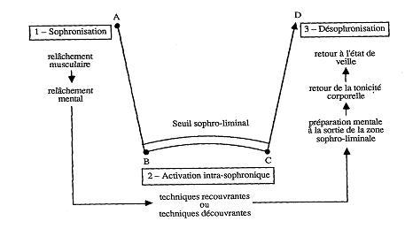

Les trois grands principes fondamentaux de la sophrologie
sont les suivants:
-
Amener le schéma corporel à plus de réalité
vécue, pour habiter le corps en bonne santé et
conquérir l'harmonie physique et psychique.
-
Renforcer l'action positive, afin de développer les éléments
positifs du passé, du présent et de l'avenir et de
mieux utiliser tous nos potentiels (de la potentialité à
la capacité).
-
Développer la réalité objective, pour apprendre à voir les
choses davantage comme elles sont, développer plus de
réalisme et donc d'efficacité dans l'action.
La sophrologie s'appuie sur des
techniques
que l'on nomme
statiques ou
dynamiques.
La relaxation statique
La relaxation statique se pratique allongé, assis ou aussi debout, au choix
du sujet. Ici le confort est une priorité. Le
pratiquant doit se sentir en sécurité et en confiance
pour profiter au mieux de la séance. Ces méthodes
s'adressent plus au mental et utilisent des visualisations. Leurs
objectifs sont plus ciblés selon le but à atteindre.
Nous pouvons distinguer les techniques associées au présent : essentiellement
des exercices de concentration ou d'attention à
un stimulus (respiration, sensations, image agréable, objet
neutre). Celles orientées vers le futur : acceptation
progressive d'un évènement redouté,
désensibilisation (traitement d'état anxieux,
certaines peurs), évocation positive de l'évènement
futur. Les techniques orientées vers le passé :
évocations positives de souvenirs récents ou anciens
qui permettent de se relier à une image de soi, à une
expérience passée positive (ex: situation passée
où nous avons éprouvé de la confiance en
nous pour nous imprégner de ce sentiment positif dont nous
allons avoir besoin dans une situation prochaine...)
La relaxation dynamique
La relaxation dynamique à été
crée en 1975 par Caycédo. Elle sert de complément
aux méthodes statiques de la sophrologie. Elle est inspirée
des diciplines de l'Orient mais dépouillée de leur
contenu religieux et addaptée à l'Occident. C'est
un travail qui inclut le corps et son mouvement. Il existe plusieurs
degrès d'aquisition progressifs à l'aide
d'exercices. Ces exercices utilisent la respiration, le relachement
musculaire et des mouvements chargés d'intention. Elle
se pratique debout ou assis.
Son but ultime est d'être une dicipline pour
la vie aboutissant à l'accomplissement du sujet par la voie
de la conscience: d'acquérir le mieux être, l'harmonie
et l'équilibre. Elle forme une
méthode pour développer notre conscience dans sa
relation à notre corps que ce soit dans sa dimension
proprioceptive (conscience de sa position et de ses mouvements), son
image (image de soi), ou encore sa projection tridimensionnelle dans
l'existence (rapport au temps et à l'espace). Chaque
exercice à une fonction et une intention de libérer des
tentions.
Chaque séance est codifiée selon le même schéma :
-
La préparation : présentation de la méthode, et acceptation de la méthode par le
sujet.
-
- sophronisation
- activation intra-sophronique
- dé-sophronisatio
- dialogue post-sophronique

Les Outils
La sophrologie permet de retrouver l'usage d'outils dont nous disposons tous :
RESPIRATION
La respiration profonde améliore l'oxygénation,
dénoue les muscles et apaise l'intellect.
L'utilisation consciente de la respiration favorise la concentration, la détente, et permet la recharge énergétique.
DETENTE
Lorsque le corps physique se détend, le mental se calme également et la conscience peut s'étendre à la réalité intérieure.
Alfonso Caycedo, père de la Sophrologie, s'est inspiré du training
autogène de Schultz, du Yoga, de la méditation et de multiples autres
pratiques utilisées dans le monde entier. Il a créé une technique
adaptée au monde Occidental, permettant d'installer la détente et le
bien être dans le corps et l'esprit par suggestion.
La pratique de la sophrologie induit une profonde détente et donne
accès au rêve éveillé. La conscience reste en éveil, sauf si une
fatigue ancienne invite à la sieste aux premiers signes de détente.
Dans ce cas, les suggestions de bien être données durant la séance sont
mémorisées inconsciemment pendant que les corps se régénèrent.
Le rêve éveillé est une période de sommeil paradoxal.
Une demie-heure de sommeil paradoxal procure la même régénération que 3 bonnes heures de sommeil.
Au fil des séances, l'impression de somnolence durant les séances
diminue, le pratiquant cultive ses capacités de détente physique et
mentale et s'éveille à sa réalité intérieure.
Une pratique régulière de la Sophrologie améliore les perceptions
physiques, la gestion des émotions et du mental, la lucidité. La
conscience s'élargit, les facultés de mémorisation et de visualisation
se développent.
VISUALISATION
Visualiser, c'est comme imaginer. Utilisée en état de relaxation, l'imagination devient créatrice.
Les suggestions positives, dont l'orientation est définie d'un commun
accord avant les séances, renforcent la visualisation.
Vous pouvez ainsi transformer votre perception de toute chose, générer un déroulement positif des épreuves redoutées.
La visualisation permet aussi de récolter les messages émanants de
votre monde intérieur, de découvrir des trésors inexplorés de votre
conscience.
Après la séance, l'écoute consciente du sophrologue permet à la personne
d'accueillir les éléments de son ressenti intérieur dans sa réalité
vécue.